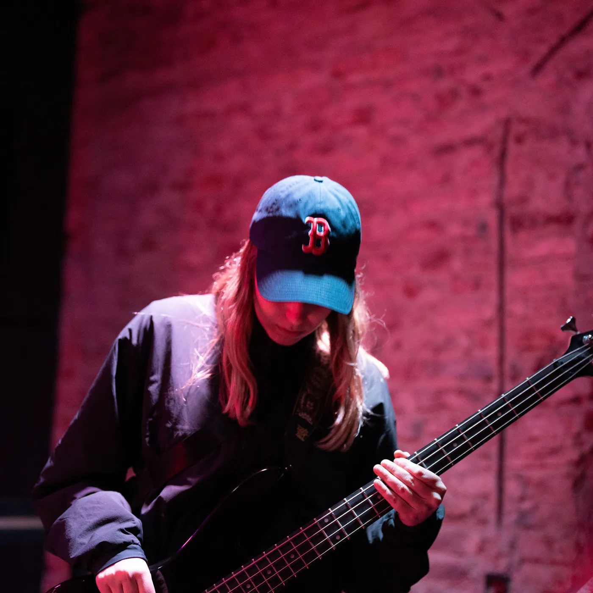
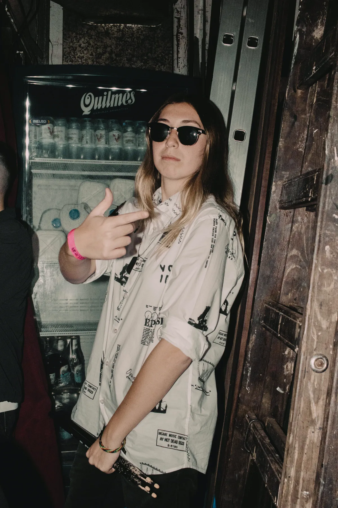
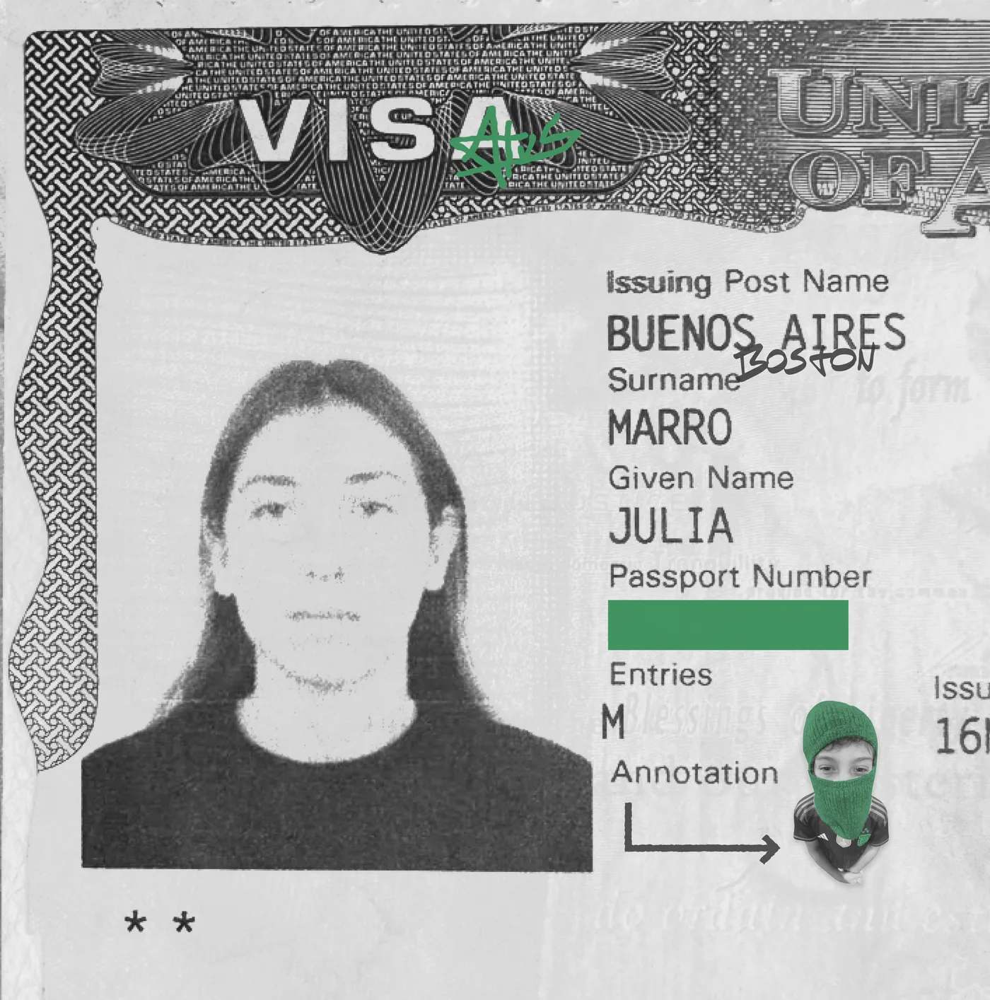

I am a producer from Buenos Aires, currently based in Boston, creating music that brings together the places, people, and sounds that have shaped me.
From playing in a band back home to studying production at Berklee, my relationship with music has always been about the same thing: creating something that makes people feel, connect, and move.



About me
Music has been part of my life for as long as I can remember.
I grew up in Buenos Aires, surrounded by a huge mix of music and cultures. Over time I realized that what I loved wasn’t only performing music, but building it: the sound, the arrangements, and all the small decisions that can completely change how a song feels.
My band, Posguerra, taught me how to create with other people and turn an idea into something real. It was also where I understood that I didn’t only want to be the person playing the music. I wanted to shape the whole picture.
That curiosity brought me to Berklee College of Music in Boston, where I study Independent Recording & Production with a minor in Psychology. Since then I’ve recorded artists and musicians, built productions from the ground up, mixed my own projects, and studied abroad at Berklee Valencia, which reminded me how much music connects different cultures.
I love jumping between genres: pop, electronic music, R&B, Latin music, hip-hop, rock, disco, tango, or whatever serves the song. Long term, I want to stay connected to both sides of who I am, Buenos Aires and the international music industry, and create records that travel far beyond the place where they started.
Berklee College of Music
Independent Recording & Production · minor in Psychology
Written, arranged and produced by me, between Boston and Buenos Aires. Half the people playing on this record came from Berklee; Buenos Aires brought the other half. Tap any of them: full tracks, no previews.
All of Buenos Aires, set down in Boston.
The arch is Rowes Wharf, in Boston, and the green comes from there too. Nothing inside it is: the kiosk, the blackboard, the kids on top of the newsstand, the CEDA EL FASO sign. All Buenos Aires, all of it travelling.
{kind=link}